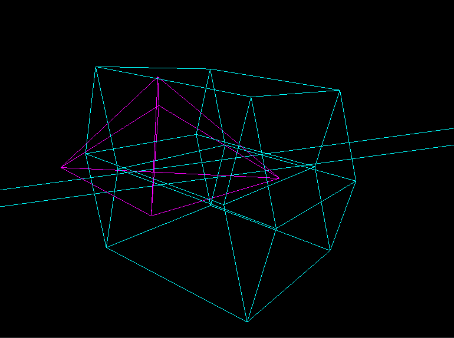
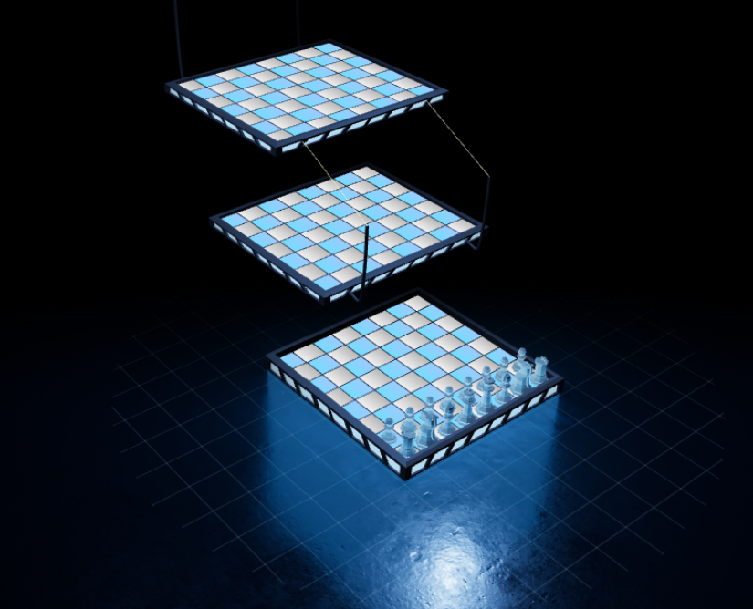
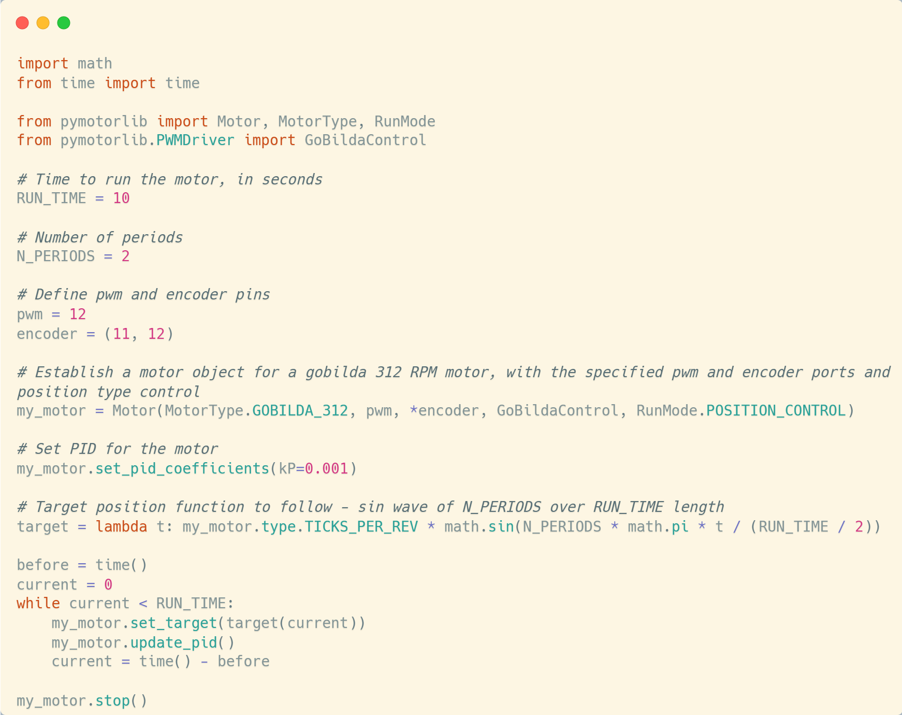

kinect-terrain-tracker
A fast and efficient floor detection system using raw
depth data from the Xbox One Kinect, projecting the detected floor into a bird's-eye view with dynamic
calibration.
space-mission-planner
Demo project that calculates trajectories and fuel requirements for different
transfers.

4d-projection
Loads 4D meshes and renders them in 3D using hyperplanar slices.

chess-3d
A true 3D chess game, allowing pieces to move in 3D, w/ toptobes.

coyote
A pathing and control library for 2-wheel differential swerve drives. I also
used CAD to design the drivetrain & built it.

motor-lib
A library for PWM-based control of 12V DC motors in Python. Requires a GPIO device.
turing-machine-language
An instructional language based on Alan Turing's original conception of a
Turing
machine, consisting of pages and awareness.